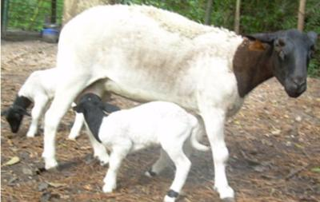
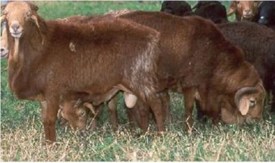
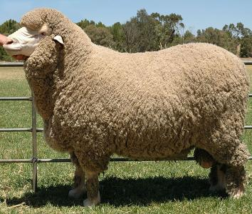
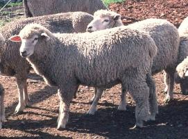
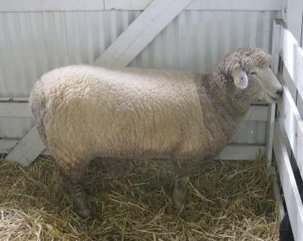
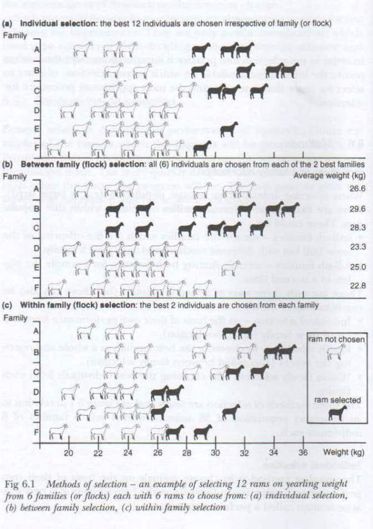
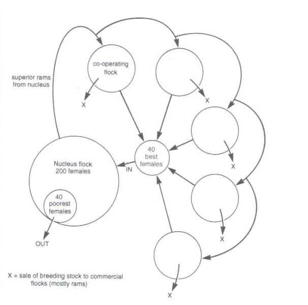

Sheep (new, with animal welfare information)
Sheep respond very well to good care and management, so the first step to improve their health is to provide good feeding and control diseases and parasites. Only then can further improvements be made by implementing a good breeding program.
Introduction
Origin and history of sheep
Understand sheep as the animals they are
In temperate zones, sheep are seasonal breeders. An ewe usually give birth once a year and have 1-3 lambs. They normally live to be about 8 years old, but can sometimes live to be as old as 20. Pregnancy lasts for 147 days. Lambs form strong bonds with their mothers, and mothers are very protective. The lambs can identify their mother by her bleat. Sheep are robust animals with a very good ability to adjust to the conditions. If they are diseased, they keep on moving with the flock to a point where they are almost dead, which just illustrates how dependent and connected they are to the flock, as the only defense against predators.
Breeds
A breed is a group of domestic animals with a uniform appearance, behavior, and other characteristics that distinguish it from other animals of the same species. It is developed as a result of intensive selection of desirable traits within a large population until the selection goal has been achieved, usually after the fourth generation. Then the breed is considered to be a pure breed.
When selecting animals, it is important to think about the environment that they are to live in. Many pure bred animals come from Europe, where the climate is cool and good quality fodder plenty. These sheep are not usually suited for hot dry areas with little available fodder.
Hair Sheep breeds: The major hair sheep breeds include: Dorper; Nyanza Fat-tail; Persian Black Head; Red Masai and crosses of these four with local stock. The hair sheep are mainly reared in the arid and semi arid areas.
Wool and Dual purpose breeds: The major wool and dual purpose sheep breeds include: Merino; Corriedale; Hampshire Down; Romney Marsh and crosses of these breeds with local stock. The wool sheep are reared mainly in the cool high rainfall areas.
Common breeds suitable for different regions in Kenya:
| Region | Sheep |
| High altitude | Corriedale, Merino, Hampshire Down, East African fat rumped type |
| Medium altitude | Dorper, East African fat rumped type, East African fat tailed type |
| Low altitude | Red Masai, Dorper, Persian black head |
Hair sheep
a) Dorper Sheep
|  |
| Dorper sheep |
|
|
| Variable | Number of ewes | Lambs born | Lambs weaned |
| Ewes mated | 100 | ||
| Ewes lambed | 95 | ||
| Ewes with single lambs | 61 | 61 | 60 |
| Ewes with twin lambs | 30 | 60 | 58 |
| Ewes with triplet lambs | 4 | 12 | 10 |
| Total number of lambs | 133 | 128 |
Source: Campbell (2000)
- Average birth weight was 3.48 kg for males and 3.37 kg for females.
- Adult live-weight was 74 kg for males and 44 for females (DAD-IS 2005).
- The Dorper lamb can reach a live-weight of about 36 kg at the age of 3-4 months.
- The daily gain averages at 243 g. This ensures a high quality carcass of approximately 16 kg and is associated with the inherent growth potential of the Dorper lamb and its ability to graze at an early age.
- In more marginal areas of Kenya's Machakos District, Dorper ewes registered 10% twining rate, 78% lambing (fertility) rate, average birth weight of 3.6kg, pre-weaning lamb growth and mortality rates of 178 g/day and 14%, respectively. Average pre-weaning daily gains is 183 g/day and lamb mortality rate is 3.5% and with average weaning weights of 23.8 kg at 109 days.
b) Red Maasai
|  |
| Red Maasai sheep |
| (c) www. abc.net.au
|
- The average birth weight is 2.7 kg and
- Average weaning weight is 15 kg with weaning rates at 97% and average daily gains at 128 gm respectively.
- Mature weight for males is on average 45.5kg and 35 kg for females.
- Pre-weaning daily weight gain is 105 gm for males and 98 gm for females.
- The mortality (death) rates (28%) of Red Maasai sheep is better than that of Dorper sheep (66%) under moderate to high worm (Haemonchus contortus) infections.
- Crosses between Dorper and Red Maasai performed 828 gm.
c) Persian Blackhead
|
 Black Persian sheep (c) Shi Zhao, Wikipedia |
 Black Persian Sheep in arid area, Isiolo (c) Monique Hunziker, Biovision |
Wool sheep
a) Merino sheep
Origin and distribution: Merino sheep were introduced into Africa in 1789 with imports of Spanish Merinos. By the mid-1800s the breed was spread over many parts of Africa. From 1891 onwards, American Vermont type Merinos were introduced. The African Merino is a composite of Spanish, Saxony, Rambouillet, American and Australian Merinos. These sheep are found mainly in semi-arid to sub-humid climates in Kenya and at medium to high altitudes under ranching and agro-pastoral management systems.
|  |
| Merino sheep |
| (c) C.Goodwin, wikipedia.org
|
b) Corriedale
|  |
| Corriedale sheep |
| (c) Bob Nichols, wikipedia.org
|
c) Romney Marsh sheep
Description:
Fleece characteristics
|  |
| Romney Marsh sheep |
| (c) Steven Walling, wikipedia.org
|
Housing
Sheep are foragers and can walk over quite large distance to graze. They are not climbers like goats. Housing in tropical and semi-tropical regions can therefore be kept to a minimum, as a night shelter or a shelter in extreme weather conditions like excessive rain in humid areas, to protect the animals and especially the young ones. It can be relevant in cases of serious predator problems. In the arid tropics no protection other than natural shade is required. Sheep do not tolerate mud well; therefore yards and shelters should be built only on well drained ground.
Where housing facilities are provided, it will be necessary to provide water and feed troughs. A feed trough should be 0.3 to 0.4m deep front to back and have a 0.5 to 0.6m high front wall facing the feed alley
In temperate climates and at high altitudes it can be necessary with a more substantial structure may be needed. FAO recommends to build an open-front building facing north provides wind protection and a maximum of sunshine. A rammed earth floor with a slope of 1:50 toward the open front is recommended. A concrete apron sloped 1:25 and extending from 1.2m inside to 2.4 m outside will help maintain clean conditions in the barn.
It can be practical to organise the housing facilities in a way so that temporary panels can be placed to help divide and handle the flock when necessary, e.g. in case of disease handling or lambing. Individual lambing pens should be 1.5m depending on the weight of the ewe and number of lambs expected.
In areas of high rainfall it may be desirable to keep the animals off the ground. Stilted houses with a slatted floor which is raised 1 to 1.5m above the ground to facilitate cleaning and the collection of dung and urine can be very practical in such area. If making a slatted floor, slats shall be 70 to 100 mm wide - remember that sheep have small claws, and that they are walkers and not climbers, so they feel uncertain on a high floor with slats. The slats should be 25 to 30 mm thick and laid with 25 mm spaces.
Milking can be facilitated by providing a platform along the feeding fence where the animals can stand while being milked from behind. Such a platform should be 0.8m deep and elevated 0.35 to 0.5m above the floor where the milker stands.
Feeding
Traditional sheep husbandry systems are ecologically well-balanced, but often the food available to sheep is fibrous and deficient in energy and protein and minerals are in short supply. Nutrition plays a major role in the overall productivity, health, and well-being of the sheep flock. Because feed costs account for approximately two-thirds of the total cost of production, it is important that producers consider nutrition management a top priority. The sheep owner should try to balance the demands of the sheep breed and the quality (and quantity) ot the feed. It makes no sense to breed a very energy rich ration demanding sheep breed when it is impossible to meet that in the management. Nutrient requirements of sheep vary with differences in age, body weight, and stage of production. The five major categories of nutrients required by sheep are:
2) Energy;
3) Protein;
4) Vitamins; and
5) Minerals.
2) Mid-gestation; and
3) Weaning.
Body condition score 0 - extremely thin
Backbone: The bones form a Sharp narrow ridge. Each vertebra can be easily felt as a bone under the skin. There is only a very small eye muscle. The sheep is emaciated and you have a serious animal welfare problem
Short Ribs: The ends of the short ribs are very obvious. It is easy to feel the squarish shape of the ends. Using fingers spread 1 cm apart, it feels like the fingernail under the skin with practically no covering
![]() |
| Diagram showing a body condition score 0 - extremely thin |
| (c) Andrew Marete, 2011 |
Body condition score 5 - very fat
Backbone: The spine may only be felt (if at all) by pressing down firmly between the fat covered eye muscles. A bustle of fat may appear over the tail. This sheep is seriously overweight and the diet needs to be modified.
Short Ribs: It is virtually impossible to feel under the ends as the triangle formed by the long ribs and hip bone is filled with meat and fat. The short rib ends cannot be felt.
![]() |
| Diagram showing a body condition score 5 - very fat |
| (c) Andrew Marete, 2011
|
Table 1. Daily requirements of ewes with body weight of 50 and 70 kg in different stages of production for energy and protein, calcium and phosphorus and for vitamin A and E and the maximum dry matter intake capacity (DMI) of the ewes.
| Live- weight | Category | Daily Gain (g) | DMI | ME M/cal | Crude Protein (g) | Calcium g | Phosphorus g | Vit A IU | Vit E IU |
| 50 | Maintenance | 10 | 1.0 | 2 | 95 | 2.0 | 1.8 | 2350 | 15 |
|
| Flushing breeding | 100 | 1.6 | 3.4 | 150 | 5.3 | 2.3.6 | 2350 | 24 |
|
| Gestation:15 weeks | 30 | 1.2 | 2.4 | 112 | 2.9 | 2.1 | 2350 | 18 |
|
| Last 4 weeks gestation 140% lambing/ last 4-6 weeks suckling singles | 180 45 | 1.6 | 3.4 | 175 | 5.9 | 4.8 | 4250 | 24 |
|
| Last 4 weeks gestation 200% lambing | 225 | 1.7 | 4.0 | 196 | 6.2 | 3.4 | 4250 | 26 |
|
| First 6-8 weeks sucling singles/ Last 4-6 weeks suckling twins | -25 90 | 2.1 | 4.9 | 304 | 8.9 | 6.1 | 4250 | 32 |
|
|
|
|
|
|
|
|
|
|
|
|
|
|
|
|
|
|
|
|
|
|
| 70 | Maintenance |
| 1.2 | 2.4 | 113 | 2.5 | 2.4 | 3290 | 18 |
|
| Flushing breeding | 100 | 1.8 | 3.8 | 164 | 5.7 | 3.2 | 3290 | 27 |
|
| Gestation: 15 weeks | 30 | 1.4 | 2.8 | 130 | 3.8 | 3.3 | 3290 | 21 |
|
| Last 4 weeks gestation 140% lambing/ last 4-6 weeks suckling singles | 180 45 | 1.8 | 3.8 | 193 | 6.2 | 5.6 | 5950 | 27 |
|
| Last 4 weeks gestation 200% lambing | 225 | 1.9 | 4.4 | 214 | 7.6 | 4.5 | 5950 | 28 |
|
| First 6-8 weeks suckling singles/ Last 4-6 weeks suckling twins | -25 90 | 2.5 | 5.9 | 334 | 9.3 | 7 | 5950 | 38 |
Urea
Urea is not a protein supplement, but a source of non-protein nitrogen (NPN) for protein synthesis by rumen bacteria. It should be used only in conjunction with high-energy feeds such as maize. Urea, which is 45 percent nitrogen and has a crude protein equivalent of 281 percent, should not supply over one-third of the total nitrogen in a diet. To determine the grams of nitrogen in a diet, multiply the total kilos of crude protein in the diet by 16 percent. Other general rules for the use of urea are:
Minerals
Vitamins
Table 2, Average daily mineral and trace element requirements for different categories of sheep
| Category | kg DM | Ca | P | Mg | Na | K | Cl | S | Cu | Co | Mo | J | Zn | Mn | Fe | Se |
|
|
| g | g | g | g | g | g | g | mg | mg | mg | mg | mg | mg | mg | mg |
| Gestation | 1.9 | 5.6 | 3.7 | 1.7 | 0.7 | 4.9 | 1.1 | 2.85 | 14 | 0.2 | 0.19 | 1.5 | 30 | 38 | 92 | 0.18 |
| 2 kg milk | 2.3 | 8.3 | 7 | 3.8 | 1.9 | 11 | 3.8 | 3.3 | 15 | 0.26 | 0.23 | 1.5 | 56 | 46 | 19 | 0.32 |
| 3 kg milk | 2.6 | 10 | 9.2 | 4.4 | 2.4 | 13 | 4.8 | 3.9 | 18 | 0.3 | 0.26 | 1.5 | 66 | 52 | 23 | 0.37 |
Weaning lambs
-
The ability to supply adequate grass for lambs is the key to successful weaning. Lambs are selective grazers, selecting the sweetest and best grass for themselves. Do not allow ewes to compete with lambs for grass from 14 weeks onwards.
-
Ensure lambs are in a well fenced field with an abundance of leafy grass. Sward (grass) heights should be maintained at 8-9cm. Move lambs to the best grass on the farm, ideally after-grass containing clover.
-
Do not graze tightly. Use a follower group of stock to clean up.
-
During rains and up to weaning lambs may gain 300g per day. After weaning they can only gain 100-200gm per day, depending on grass quality and availability.
-
Consider using a pour-on for fly strike as they have a shorter withdrawal period than dips. Do not dip if you expect to sell within the next month; Clip around the tail to keep clean. (antibiotic withdraw time double in organic)
-
A stomach worm dose for lambs at weaning is advisable, especially when moving to after-grass. It is not necessary if a drench was used in the last few weeks.
-
Treat for cobalt in deficient areas. Lambs suffering from cobalt deficiency (pining) will lose condition and wool will dry out. The main method of supplementation is orally - it can be mixed with drinking water, as cobalt by injection is not as effective. Dosing every 2 weeks with cobalt sulphate is recommended in deficiency situations.
-
Restrict ewe feed for 1-2 weeks to stop milk production when weaning lambs early. This can be on a bare paddock or indoors. Do not restrict too severely, as this could leave ewes too low in condition before going to the ram. Be careful if keeping ewes indoors for a few days after weaning to ensure that they are well bedded, otherwise an outbreak of mastitis is possible.
-
Select potential replacement ewe lambs post-weaning, in cold season when only the poor performing ewe lambs are left it is too late.
-
Where grass becomes scarce, introduce meal and continue meal feeding until lambs is sold. Concentrate supplementation of weaned lambs on pasture increases carcass weight and leads to earlier drafting of lambs. Response to meal feeding post-weaning is 10-12 kg/kg carcass wt. With meal at PS130/tonne and lambs at Ksh.350/kg this means that Ksh.200 spent on meal will give a return of Ksh.350.
Table 3. Daily requirements of lams with adult body weight of 50 and 70 kg for energy and protein, calcium and phosphorus and for vitamin A and E and the maximum dry matter intake capacity (DMI) of the ewes.
| Live- weight | Category | Daily Gain (g) | DMI | ME M/cal | Crude Protein (g) | Calcium g | Phosphorus g | Vit A IU | Vit E IU |
| 30 | Replacement ewe lambs | 225 | 1.2 | 2.8 | 185 | 6.4 | 2.6 | 1410 | 18 |
| 40 |
| 180 | 2.0 | 3.3 | 176 | 5.9 | 2.6 | 1880 | 21 |
|
|
|
|
|
|
|
|
|
|
|
| 40 | Replacement ram lambs | 330 | 1.8 | 4.1 | 243 | 7.8 | 3.7 | 1880 | 24 |
| 60 |
| 320 | 2.4 | 5.5 | 263 | 8.4 | 4.2 | 2820 | 26 |
|
|
|
|
|
|
|
|
|
|
|
| 30 | Finishing lambs, 4-7 month | 300 | 1.3 | 3.4 | 191 | 6.6 | 3.2 | 1410 | 20 |
| 40 |
| 275 | 1.6 | 4.4 | 185 | 6.6 | 3.3 | 1880 | 24 |
| 50 |
| 200 | 1.6 | 4.4 | 160 | 5.6 | 3.0 | 2350 | 24 |
Determining the age of sheep by its teeth
To know the age of sheep, you can examine the teeth. Breakdown of the teeth is a very common reason for culling small stock under range management, as poor quality teeth will affect the ability to browse and feed well.
Lambs have 8 temporary teeth that erupt at approximately 2 months of age. They will be replaced by larger and wider permanent teeth between 12 months and 4 years of age. At this point they will have all their teeth. Sheep don't have top front teeth.
Sheep mouth & teeth
20 Temporary teeth
32 Permanent teeth at maturity
4 pairs of Incisor teeth on lower jaw
Upper incisors missing
Cartilaginous (hard) dental pad on upper jaw
Split upper lip with mobile lips
|
Age of Sheep (teeth) Lamb 4 pair of Incisors 1 year middle pair of Incisors 2 years 2nd pair of permanent Incisors 3 years 3rd pair of permanent Incisors 4 years 4th pair of permanent Incisors 5 years all permanent Incisors close together 6 years Incisors begin spreading apart 7-8 years some Incisors broken 10-12 years all Incisors missing |
| |
| Determining age of sheep by its teeth | ||
| (c) Andrew Marete, 2011
|
![http://www.infonet-biovision.org/res/res/files/3939.400x300.png]()
{kind=link}
{kind=link}
{kind=link}
{kind=link}
Breeding sheep
Selection methods:
There are basically 3 ways of selecting individuals, and these can be combined
- Individual selection - on the basis of their own performance irrespective of family (or mass selection). Comparing individuals on the basis of their own performance is often called a performance test. In most situations individual selection is the best procedure as it takes account of all the additive genetic variation that is present in the population.
- Family selection - by choosing the best families as a whole and rejecting others (also called between family selection). Here selection is on the average value for the family and takes no separate accounts of individuals. Family selection may increase the rate of inbreeding so is not recommended for common use.
- Within family selection - choosing the best individuals from each family. This procedure retains at least one representative from each family for the next generation. It is most useful when differences between families are mostly due to environmental factors. Retaining at least one member from each family for the future can also be helpful in reducing problems of inbreeding.
|  |
| Methods of selection |
| (c) Gerals Wiener 1994 Animal breeding - The Tropical Agriculturalist. Macmillan Publishers |
Breeding Methodologies
1. Grading up
Ewes from local breeds and their female offspring are mated with rams of a more productive breed for example Dorper rams. The resulting crosses are then mated with non-related animals with the same level of cross breeding (first generation 50%, second generation 25% or 75% depending on ram used). Positive traits of the local breed (disease, parasite and drought resistance) can be maintained this way. Maasai-Dorper crosses for example are most productive with 75% Red Maasai blood.
2. Crossbreeding
Crossbreeding refers to the crossing or mating of two pure breeds, but the term is frequently extended to include the offspring of purebred sires and crossbred females. When two purebreds are used, characteristics of the first cross animal should show:
1. Outstanding individual merit
2. Intermediate expressions between the parent types and
3. Resemblance to one or other of the parent types.
Crossbreeding of sheep is widely practiced throughout EA, especially between indigenous Red Maasai sheep and Dorper and Dorset Horn for improved performance. It should be the objective of the breeder to produce offspring superior to both parents. This is achieved when the progeny resulting from crosses demonstrate extra or improved performance above the average of the parents (heterosis or hybrid vigor).
There is no doubt that crossbreeding is an important method of commercial sheep production. The vigour, thrift and general excellence of the first cross sheep are features that are especially apparent and which can be measured accurately in terms of increased returns. As sheep production becomes more intensive for both mutton and milk production, it is likely that cross breeding and exploitation of hybrid vigour will become more popular.
3. Group breeding scheme without nucleus by use of reference rams
One of the main benefits from cooperation among breeders is that the animal population directly involved in a selection program is enlarged compared to what is available to the individual breeder. In order to know whether a ram used in one flock is genetically better than one of the rams in the other cooperating flocks, it is necessary to have some sort of link between the flocks. This can be done by identifying so called reference rams. These rams leave offspring in several or possibly all cooperating flocks, The offspring of the reference rams can then be compared with offspring of any other ram used in the same flock. This way the best rams in the whole of the group breeding scheme:
- Can be identified, with the help of appropriate statistical tools
- Can become available to the scheme as a whole
- Can be used to breed the next generation of males
If a community wants to upgrade and improve the quality of their herds it is recommended to seek advice from professional breeders to set up breeding schemes that fit the objectives in hand.
4. Nucleus group breeding schemes
These breeding methods were pioneered in New Zeeland and Australia , but successfully adopted in many countries. For such a scheme a number of flock(or herd) owners agree to cooperate by deciding on common breeding aims and pooling their animal resources. The key of such a scheme is to create a nucleus - or central flock from the best of the breeding females of each participating flock. Very good record keeping is necessary.
The nucleus flock in this case was set up from the best females from the participating flocks. Thereafter each year the poorest females (40 in this example) are culled from the nucleus flock and replaced by an equivalent number from the cooperating flocks, taking the best (8 females) from each. The best of the rams are used in the nucleus flock and the next best in the cooperating flocks.
|  |
| Open Nucleus breeding scheme - an example of a group breeding scheme with sheep |
| (c) Gerals Wiener 1994 Animal breeding - The Tropical Agriculturalist. Macmillan Publishers |
Sheep reproductive traits
| Ewes | |
| Mature weight | 90 - 300 lb. |
| Breeding season | early February to late June (some are poly-estrous year around, ex. Dorset) |
| Estrous cycle | 14 - 19 days seasonally poly-estrous |
| Duration of estrus | 24 - 36 hr. (standing heat) |
| Time of ovulation | 24 - 30 hr. from beginning of estrus |
| Gestation period | 145 -155 days |
| Breeding/year | 1 - 2/yr. |
| Artificial Insemination | Yes Cervical or Vaginal Method Intrauterine Method (not available in Kenya) |
| Ewe lambs | |
| Puberty | 5 - 8 months (80 - 100 lb.) |
| Minimum breeding age | 8 - 10 months |
| Rams | |
| Puberty | 6 - 8 months |
| Mature weight | 150 - 450 lb. |
| Serviceability | 1 ram: 30-35 ewes (60 day breeding season) |
| Ejaculate volume | 0.8 - 1.2 ml |
| Sperm concentration | 2000 - 3000 million/ml |
| Motile sperm | 60 - 80% |
| Semen freezable | yes |
by Marete
Breeding Records
- A ram must never be allowed to mate with his sisters, daughters, grand daughters, mother or grandmother.
- A ram should never serve a flock for longer than one year. He must then be exchanged.
- Keep records and use one of above described systems depending on your situation. You must know at least the mother, father, grandmother and grandfather of each individual.
- Ram keepers should rotate rams regularly among users and groups of sheep keepers.
Ewes: First-time moms
Gestation
Extra food
During her last month of pregnancy, a ewe needs extra nutrition because her lambs are growing rapidly inside of her and her mammary (udder) tissue is developing. Approximately 70 percent of fetal growth occurs during the last month of pregnancy. The growth of the fetuses also reduces the ewe's rumen capacity. Because of that in ewes ketosis could occur in the last part of pregnancy. A pregnant ewe requires a more-nutrient dense diet, especially if she is carrying multiple fetuses.
If a ewe doesn't get enough feed during late pregnancy, she may get sick because her unborn lambs are taking most of her nutrients. Thin and fat ewes and ewes carrying multiple fetuses are most prone to pregnancy toxemia (ketosis). Thus, it is common to feed some grain or other energy-rich feed during late gestation. On the other hand, if a ewe is fed to rich diet during during larger part of the pregnancy, she may have trouble delivering her lambs because they may get too big to fit through her pelvic cavity. Fat ewes are also more prone to having problems at lambing time.
Periparturient internal egg parasite rise
A ewe's natural-acquired immunity to internal parasites (worms) is weakened around the time of lambing. Scientists call this phenomenon the "periparturient rise" in worm eggs. This periparturient egg rise often occurs at the same time hypobiotic (inactive) worm larvae are resuming their life cycles in the spring. Thus, it is a common practice to deworm ewes during their last month of pregnancy. A dewormer that is effective against inactive larvae should be used. If there is no chance to become infected with internal parasites deworming is not advised. This could be the case when sheep are in rotational grazing and return after long periods (months) at the same plot.
Due to the widespread emergence of drug-resistant worms, another strategy is to increase the protein content of the late-gestation ration, as the primary parasite that affects sheep is a blood sucking worm (barber pole) that causes blood and protein loss. Higher protein rations have been shown to reduce egg counts in periparturient ewes.
Lambing
Ewes usually give birth to 1 to 3 lambs at each birthing event. Birthing is called lambing. The technical term for all species is parturition. Twin births is most common in well-managed flocks and with many breeds of sheep. First-time moms, especially yearlings, are more likely to have single births, though twins are not uncommon in some breeds. Ewes produce their largest litters of lambs when they are between the ages of 3 and 6.
The more lambs a ewe has the more feed she needs to produce milk for them. Oftentimes, extra lambs need to be cross-fostered onto other ewes or artificially reared. Proflic breeds are not recommended for novice shepherds or in situations where nutrition and management are limiting factors.
Because some sheep are raised in more difficult environments, sometimes it's more desirable for a ewe to have just one lamb. This is because there may not be enough food for the ewe to have enough milk for the growth of two lambs. If the flock has to travel far for food and water, it's usually better to have one strong lamb than two or three smaller lambs that may struggle to keep up. Smaller, weaker lambs that lag behind the flock are more likely to be killed by predators
Birth weights
The weight of newborn lambs varies by breed, sex of lamb, litter number, and ewe nutrition. The lambs from medium to small breeds are similar in size to human babies, usually between 5 and 12 pounds, with an average of 8 to 10 pounds. When birth weights get too large (relative to the size of the breed or cross), difficult births can be encountered. Medium-size newborn lambs (for the breed or cross) tend to have the highest survival rate.
Diseases - prevention, symptoms, treatment
Sheep diseases
- Orf (for more information see here)
- Bluetongue (for more information see here)
- PPR (pest of small ruminants) came to Kenya in 2006 and is related to rinderpest and very deadly (for more information see here)
- Sheep and Goat pox
- Enterotoxemia (for more information see here)
- Tetanus (for more information see here)
- Brucellosis (for more information see here)
- Worms (for more information see here)
- Ticks and mites - transmit diseases and weaken the animals, so should be kept below critical levels of infestation at all times (for more information see here)
Vaccinations
| Age | Vaccinate against | Application | Remarks |
| 2 weeks and above | PPR (Peste des Petits Ruminants) Goat plague | S/C Properly done once in a lifetime will do. Newborns should be vaccinated as a routine | Came to Kenya in 2006 - related to rinderpest. If no vaccination the disease can kill all your goats and sheep. |
| 2 weeks and above | Sheep and Goat pox | S/C Annual vaccinations | If no vaccination this disease may kill lambs and kids. In serious cases mortality may be high. |
| 2 weeks and above | Enterotoxemia + tetanus | S/C Every 6-8 months. Disease is common with lush pastures | Pregnant animals should be vaccinated at least a month before giving birth. Vaccination for tetanus should always follow tail docking |
| 1 month and above | Orf | Scarification method. If there is a risk of outbreak or In endemic areas routine vaccination is recommended | Orf may be more common in goats due to their feeding habits as browsers of thorny bushes. Mortality of young can be high. Repeat vaccination should be done 2-3 months after the initial one. The vaccine is live and can affect people, so HANDLE WITH CARE. |
| Brucellosis | Vaccine not available in East Africa in 2010. | ||
| 1 month and above | Blue tongue | Yearly vaccination of sheep with a live attenuated vaccine containing six strains of Bluetongue virus. | available from KEVEVAPI, Nairobi |
Internal Parasites (Worms) in Sheep
- There are three broad types of internal parasite that can cause significant health issues in sheep - worms, flukes and protozoa.
- Worms are thought to cost sheep owners more than any other disease.
- Roundworms are the most common internal parasites of sheep.
- Drench resistance is an emerging problem in managing sheep worms.
- Worm infection is a significant animal welfare issue and, if not treated, can cause death.
Worm management plan
- Worm testing. It is cheap and easy to do. Without regular testing, you won't know whether you have a problem, whether your worm management plan is working or whether you have an emerging drench resistance problem on your property.
- Grazing strategy to create safe or low contaminant pastures for weaners and lambing ewes.
- Maintaining good nutrition during periods of poor pasture growth.
- Building worm resistance in the flock.
- Biosecurity measures for new sheep arrivals on the property or any outbreak of worm disease in your flock (a sure sign that your worm management plan has failed).
- Minimizing the risk of drench resistance developing on your property.
Worms - The signs to look out for
- A typical sign of a worm problem is unthrifty sheep. An unthrifty sheep is one that is not eating properly, is losing condition, tends to lag behind the mob when moved and, in severe cases, is clearly weak.
- A worm problem often (but not always) results in sheep scouring and becoming ruffled. In severe cases, affected sheep may scour profusely. Other conditions can however produce these signs.
- Young sheep are far more susceptible to worms than older sheep.
- Sheep under stress (e.g. during the later stages of pregnancy, during lactation, during drought or winter feed shortages) are more susceptible to worms.
- A high-risk time in Kenya for worm infections in sheep is an especially long period of cold and wet weather - especially if this coincides with the later stages of pregnancy or lactation.
- Other signs of worm infection one may see are anaemia or swelling under the jaw (commonly called "bottlejaw").
- If you suspect a worm problem, it is worth doing a worm test to confirm it. Remember that "ill thrift" and scours, the major signs of a worm problem, can also occur with other diseases. So, acting purely on the clinical signs may result in a wrong (and costly) treatment.
Worm Control - General Principles
- Most sheep have some worms in their digestive system. This is normal. Indeed, exposure to worms is essential if sheep are to develop and maintain immunity to worms. Worms are only a problem if the numbers increase to the point at which production losses occur or sheep become susceptible to other disease conditions.
- There are four components of an effective worm control program. They are drenching, grazing management, nutrition and breeding worm resistant sheep. Drenching alone will not resolve a worm problem. Too frequent drenching may reduce the sheep's immunity to worms and increase the problem of drench resistant worms. Ad hoc or over-frequent drenching is one of the major causes of drench resistance and is, in most cases, a waste of money, time and effort.
- The overall purpose of a worm control program should be to minimize production losses caused by internal parasites and to maximize the sheep's immunity to worms. If these are achieved, the sheep will need fewer drenches.
- It is most important that sheep owners take a long-term and "integrated" approach to worm control. It is important that the design of worm control programs takes into account the major problem of drench resistance.
Drenching - The Basics
- Drench is the common name for an anthelmintic, a chemical specifically designed to kill worms.
- Drenches can be "broad spectrum", which means they treat a wide range of internal parasites, or "narrow spectrum", which means they treat a restricted range of internal parasites
- There are three main classes of broad spectrum drench:
- Benzimidazoles or BZs, commonly known as white drenches - Levamisoles or LEVS, commonly known as clear drenches - Macrocyclic lactones or MLs, commonly known as mectins"Combination drenches" are mixes of two or more of these drench classes - In most cases, broad spectrum drenches are used to control worms. The most common use of narrow spectrum drenches is against liver flukes (broad spectrum drenches have little or no effect on the liver fluke).
- In most cases, drench is administered orally by a drenching gun. When drenching, it is important to: i. Shake the drench container first, as many drenches settle out.
ii. Check that the right dose is being given. The dose rate will be on the drench container label.
The dose should be calculated according to the heaviest sheep in the flock and all other adult sheep in the flock should be given that dosage. If the flock includes lambs, the dose rate for all lambs should be calculated according to the heaviest lamb in the flock.iii. Check that the drenching gun is calibrated to deliver the right dose. Drenching guns have a dial of some kind to adjust the dosage. After you have set the dosage rate for your sheep, squirt a single dose into a measuring container or medicine cup and check that amount against the intended dosage. If air is being sucked into the drenching gun as it reloads, this will result in under-dosing.iv. Insert the drenching gun nozzle into the sheep's mouth from the side, between the incisor and molar teeth, and make sure that the nozzle is above the tongue. After the dose has been delivered, make sure that the sheep has not dribbled or spat the drench out.v. When the entire flock has been drenched, clean the drenching gun by pumping cold water through it. Don't use soapy water as this tends to damage the rubber seals in the drenching gun, which may then cause incorrect doses in the future. After cleaning the drenching gun, you can lubricate the rubber seals inside the drenching gun by pumping some vegetable oil through the gun (but do not use mineral-based oils, such as baby oil, as these will damage the rubber).vi. Check the withholding period for the particular drench being used. Different drenches have different withholding periods.vii. Store unused drench in the original container out of direct sunlight.viii. If using old drench, check the expiry date, which should be on the container label.
Drenching - How Often?
- There is no "one size fits all" drenching program. How often you drench will vary according to conditions on your farm.
- The basic principle in any drenching program should be to minimize the number of times a sheep is drenched - providing, of course, that effective worm control is maintained.
- Under normal conditions, if worm control has been effective at reducing worm numbers on your property, a typical drenching program may be: i. For all sheep, one or possibly two dry season drenches, using an effective broad spectrum drench - one as the pasture dies off and the second in February or March. If your worm control program is effective, the second drenching may be unnecessary, so do a worm test first.ii. For lambing ewes, an additional drench pre-lambing may be necessary. If so, it can be done at the same time that they are vaccinated for pulpy kidney and tetanus - that is, 2 or 3 weeks before lambing.iii. Lambs should be drenched at weaning and then put onto a "safe" pasture. Further drenches may be necessary - for example when the weaners are moved onto the next "safe" pasture and again in cold and wet. To avoid over-frequent drenching of weaners, which will inhibit the development of their worm immunity later in life, use a worm test to help you decide if these additional drenches are necessary.
- If you see the signs of a major worm disease outbreak in your sheep, you will need to act quickly. There is no "typical" emergency response to a worm disease outbreak, as it will depend on a range of issues specific to your farm. You will need to seek professional advice from your vet. However, the following general suggestions may be helpful: i. Firstly, you will need to check that worms are indeed the problem. A worm test will tell you whether there is a worm problem and, if so, which worms and how serious the problem is. Worm testing is the essential first step in dealing with any significant worm problem.ii. If worms are the cause of the problem, you will need to determine how this has come about. If you have been using a drench as part of your worm control program, the drench may have failed because of drench resistance. A drench resistance test could be undertaken to determine which drench will be effective in treating the worm problem.iii. You will need clean pasture to put your sheep on after they have had the emergency drench.iv. Each of the above three steps is most important. The emergency treatment is likely to fail if any of them are not done.
Drench Resistance
- "Drench resistance" refers to the situation where worms have developed an inherited or genetic resistance to specific drench classes. Once worms have developed resistance to a particular class of drench, an increasing percentage can survive a dose of that class of drench. In other words, that class of drench will no longer be fully effective.
- Drench resistance is not the only reason that a drench may fail. Other reasons include: i. The drench was not mixed before administering and had settled out.ii. The drench was past its expiry date.iii. The drenching gun was not delivering the correct dose. Check that the gun is not sucking air when reloading and that the piston returns fully down the barrel before dosing another sheep.iv. Some sheep missed being drenched or dribbled the drench out.v. The wrong dose rate was used. Different drenches have different dose rates, so always read the label or contact the manufacturer if you are unsure.
What Can You Do to Delay the Onset of Drench Resistance on your Property?
- Make absolutely sure you are administering the correct dose . Under dosing is one of the major causes of drench resistance, as it helps the worms develop a drench resistance. Check the required dose on the label on the drench container.
- Always set the dose by the weight of the heaviest sheep in the flock. Administer this dose to all adult sheep in the flock. If the flock includes lambs, set the dose for all lambs by the weight of the heaviest lamb in the flock. Unless you are very experienced with sheep, it is not easy to guess the weight of a sheep.
- Check that the drenching gun is delivering the correct dose. If the drenching gun was not properly cleaned after the last time it was used, the drench residue in the gun may have corroded or otherwise damaged the internal seals. It may also cause the piston to be "sticky", which means that it may not fully return after administering a dose, which in turn means that the next sheep would be under dosed. In any event, drenching guns should be serviced regularly. Repair kits for the more expensive drenching guns are not expensive and are available from rural agrovets.
- Use the correct drenching technique. In particular, ensure that you are drenching over the tongue rather than squirting the drench into the front of the mouth.
- Fasting. When using white drenches (BZs) or mectins (MLs), the treatment is generally more effective if the sheep are fasted for 24 hours beforehand. Keeping the sheep off feed for six hours after drenching also helps make the treatment more effective. But note that ewes in the last six weeks of pregnancy, sheep in poor condition or stressed sheep should not be fasted at all.
- Overdosing will not help. However, with white drenches (BZs), two drenches twelve hours apart can be effective. (This applies to sheep but not to goats). Note that any departures from label recommendations will extend the withholding period and therefore require an off-label use advice note from a vet.
- After drenching, put the sheep onto clean pasture wherever possible.
- Rotate between the drench classes (BZs, LEVs, MLs) either at each treatment or each year.
- Use a worm test to monitor worm faecal egg counts (FECs). If you know the level of worms in your sheep, you will be best placed to avoid drench overuse, slow the development of drench resistanceand save on drench costs.
- If you suspect drench resistance among your flock, do a drench resistance test. This will show you if any of the classes of drench are ineffective in your situation, in which case they should be dropped from your worm control program. If you wish to undertake resistance testing, discuss the process with your vet, animal health adviser, drench manufacturer or DPIPWE staff.
- It is most important that drenching is not the only strategy for worm control on your farm. Drenching should be just part of a program that includes pasture management, nutrition and selective breeding of worm-resistant sheep.
- Use a "quarantine drench" to treat any sheep coming onto the property. Unless you know the drench resistance status of these new sheep, the most effective "quarantine drench" is a combination drench (i.e. one containing both white and clear drenches) plus moxidectin, or otherwise just one of the mectins.
- It's recommended to maintain a "refugia" of susceptible worms within a flock as a way of delaying any onset of drench resistance. Essentially, this involves leaving some susceptible worms (i.e. susceptible to your drench providing you know that the class of drench you are using is effective on your farm) in the flock. The point is to dilute the number of drench-resistant worms building up in the flock. This strategy involves simply leaving 5-10% of the flock undrenched. Of course, the ones not drenched must be the healthiest looking sheep in the flock. There is some controversy about this "refugia" strategy and it may not be appropriate in all circumstances, so please consult your vet before using it.
Review process
- Compiled by Andrew Marete, MSc Animal Genetics, Nov 2011 in collaboration with Infonet
- Revision 2013 by Mette Vaarst and Gidi Smolders
Information Source Links
- Baker R.L. (1998). Genetic resistance to endoparasites in sheep and goats. A review of genetic resistance to gastrointestinal nematode parasites in sheep and goats in the tropics and evidence for resistance in some sheep and goat breeds in sub-humid coastal Kenya. FAO/UNEP Animal Genetic Resources Information. 24:13-30.
- Baker R.L., Mwamachi D.M., Audho J.O., Aduda E.O. and Thorpe W. (1999). Genetic resistance to gastro-intestinal nematode parasites in Red Maasai, Dorper and Red Maasai X Dorper ewes in the sub-humid tropics. Animal Science (UK). 69(2):335-344.
- Baker R.L., Mugambi J.M., Audho J.O., Carles A.B. and Thorpe W. (2002). Comparison of Red Maasai and Dorper sheep for resistance to gastro-intestinal nematode parasites: productivity and efficiency in a humid and a semi-arid environment in Kenya. Institut National de la Recherche Agronomique, Paris (France). Proceedings of the 7th world congress on genetics applied to livestock production. pp. 639-642.
- Chemitei V.C.C. (1978). The sheep and goat production at various Research Stations in Kenya. Sheep and Goat Development Project, Ministry of Agriculture, Kenya. Technical Note No. 21. pp. 16.
- DAGRIS, 2005: dagris
- abc.net
- The Organic Farmer's Training leaflet No. 21
- Wiener, Gerald (1994): Animal Breeding. The Tropical Agriculturist, Centre for Tropical Veterinary Medicine, University of Edinburg. Macmillan Publishers Limited, Between Towns Road, Oxford OX4 3PP. A Macmillan/CTA publication.